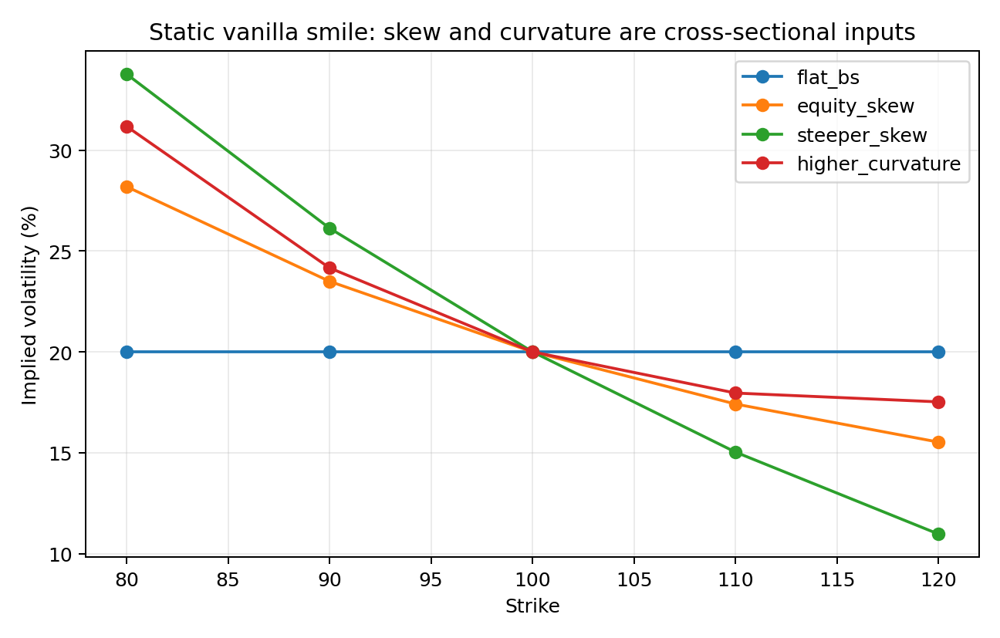
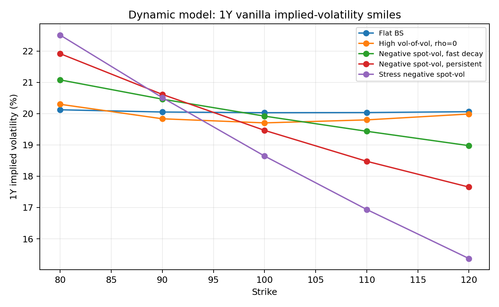
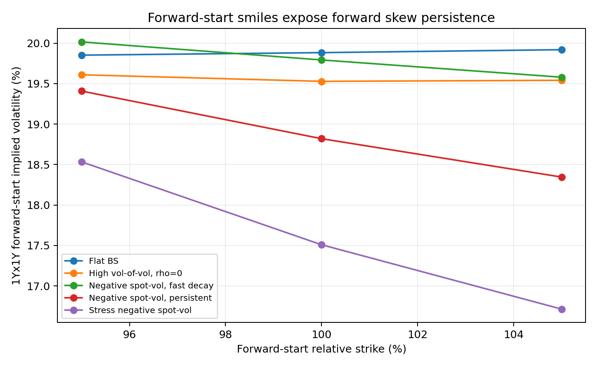
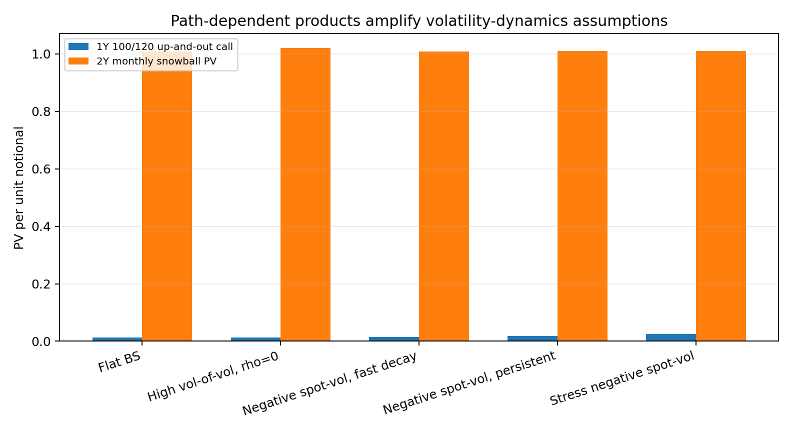
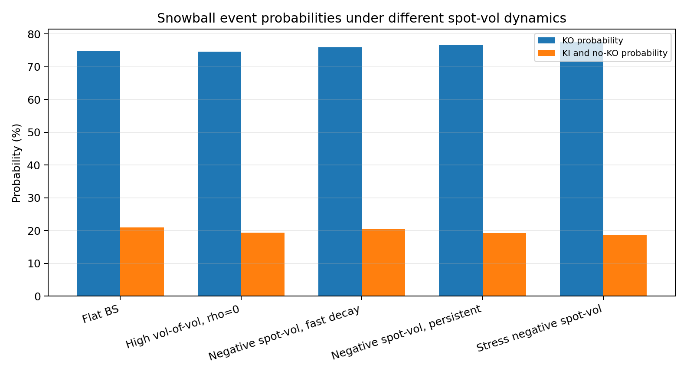

香草、奇异期权对波动率动态设定的敏感性实验
摘要
本文关注一个具体问题：当模型对 forward skew、curvature、vol of vol 和 spot-vol dynamics 作出不同设定时，哪些期权价格会明显改变，哪些期权价格主要只反映当前波动率曲面截面？
实验结论可以概括为三点。第一，欧式香草期权价格主要由当前到期日-行权价截面决定；若市场已经给定香草报价，定价层面不需要额外指定完整的未来波动率动态。第二，forward-start 期权直接暴露于未来微笑，能清楚区分“当前偏斜相近但未来偏斜持久性不同”的模型。第三，障碍期权和雪球把波动率动态假设转化为触障成本、敲入/敲出概率和条件路径分布，因此对 spot-vol dynamics 与 forward skew 更敏感。
1. 研究问题
Bergomi 的核心观点是：期权交易台使用随机波动率模型，不是为了更真实地预测现货路径，而是为了给波动率曲面动态、P&L 归因和对冲盈亏平衡水平提供模型（见 第一章关于隐含波动率动态的讨论）。基于这一观点，本文设置四个逐层递进的问题：
- 香草期权对 skew 和 curvature 敏感，但这种敏感性是否主要停留在当前截面？
- forward-start 期权是否能更直接地识别 forward skew 和 vol of vol 设定？
- 障碍期权是否会把“触障时的条件微笑”转化为显著价格差异？
- 中国市场常见的雪球结构是否对单一波动率指标不敏感，而对 KO/KI 路径事件和 spot-vol dynamics 的组合更敏感？
实验设计和结果分析均围绕这四个问题展开。
2. 理论机制
2.1 香草期权为什么主要约束当前截面
欧式看涨期权的价格为
它只依赖 的风险中性边际分布。Breeden-Litzenberger 关系给出
即同一到期日的一整条香草期权价格曲线决定终端边际密度。Bergomi 第二章笔记进一步用 Dupire 推导说明，在一般扩散
下，香草曲面只能识别
而不能唯一识别 的完整路径分布。由 Gyöngy 定理，任意随机波动率扩散都存在一个局部波动率模型复制相同的所有欧式期权价格，其局部方差正是 。
这给出本文的第一个理论判断：如果研究对象只是当前香草期权价格，校准到当前曲面已经吸收了必要信息；不同模型的 forward skew、vol of vol 或 spot-vol dynamics 可以完全不同，但仍可能给出相同或接近的香草价格。 这些动态设定会影响香草期权的对冲 P&L，但不是当前香草定价所必需的额外输入。
2.2 Forward-start 为什么同时暴露于 vol of vol 和 forward skew
Cliquet 或 forward-start 期权的支付形如
在含时依赖 Black-Scholes 框架中，由齐次性可得
其中远期方差为
这说明 之前的 cliquet 不是普通现货方向的期权，而是远期隐含波动率的期权。此处要区分两类敏感性。
第一类是 vol of vol 敏感性。用对数合约做 vega 对冲后，Bergomi 第三章笔记给出的 残余 P&L 为
该式直接说明 cliquet 对 vol of vol 敏感：只要远期方差波动，二阶项就会累积 P&L。
第二类是 forward skew 敏感性。到 时，forward-start 产品变成一只以 为新基准的欧式期权，其市场价格不再由今天的 香草微笑直接给出，而由 时刻观察到的、期限为 的远期微笑给出。记远期相对行权价为 ，，并在 时刻对远期微笑作局部展开：
则 forward-start 看涨在 时刻的条件价格近似为
对远期偏斜求导得
这个公式给出直观解释：非 ATM 的 forward-start 期权、forward call spread、cliquet payoff 的不同分段，对远期微笑斜率有一阶敏感性。特别是 95%/105% forward call spread 的敏感性近似为
其绝对值通常不小。因此，cliquet 的风险不只是“远期 ATM vol 会不会波动”，还包括“未来微笑在 reset 后是陡还是平”。Bergomi 第三章中 完整报价 写作
其中 是 vol of vol 调整， 是远期微笑调整。前者来自式（3.12），后者正是上述 和 等远期微笑形状参数的价格影响。这两个量不能仅从当前香草微笑中稳定读取；这一点也对应第三章关于 香草微笑对 cliquet 约束很弱 的结论。
2.3 障碍期权为什么可由敲入/敲出平价看出 forward skew 敏感性
障碍期权的关键不是单一到期日终端分布，而是触发时间
及触发时刻的市场状态。最直接的经济直觉来自敲入/敲出平价。对同一到期日、同一行权价、同一障碍的期权，有
因此
若市场香草期权价格已经给定，vanilla 腿主要由当前香草曲面锁定；敲出期权对波动率动态的额外敏感性，等价于敲入腿的相反敏感性：
敲入腿可以理解为“触障后才生效”的远期期权。以上敲入看涨为例，若在 时刻触及障碍 ，产品从此以后变成一只剩余期限 的香草看涨。于是可写成近似条件定价形式：
对触障时刻的远期偏斜 求导，有
只要触障概率不小、触障后剩余期权有 vega、且 不恰好使敏感性消失，敲入腿就对触障时刻的 forward skew 有一阶敏感性。由 in/out parity，敲出腿必然也敏感。这个证明比直接看敲出 payoff 更直观：敲出期权的 forward skew 敏感性来自被减掉的敲入腿，而敲入腿本质上是条件触发的 forward-start 期权。
Bergomi 第一章的 Carr-Chou 静态复制给出同一结论的另一种表达。上障碍结构在触障时需要平仓一组欧式复制工具。双数字组合在 处的价值含有偏斜修正项：
其中 约为 50%，对波动率水平本身不太敏感；真正重要的是第二项，即触障时刻的 ATM 偏斜。于是障碍期权价格依赖
这不是当前香草曲面能完全约束的量。模型必须说明“现货接近障碍时，未来微笑如何移动”。敲入/敲出平价说明这种敏感性来自触障后生效的远期期权；Carr-Chou 复制则说明这种敏感性在触障平仓成本中以 ATM 偏斜项显性出现。
2.4 SSR 与 forward skew 的关系
Bergomi 第十二章把当前 ATMF 偏斜与 spot-vol 协方差的时间分布联系起来（见 SSR 与未来偏斜的反向关系）：
左侧由当前市场微笑给定，但右侧的协方差可以集中在近期，也可以更均匀地分布到远期。局部波动率模型通常把较多 spot-vol 协方差集中在近期，因此当前 SSR 较高、未来偏斜偏弱；随机波动率/前向方差模型可以让协方差更持久，因此 forward skew 更强。
这给出本文第二个理论判断：两个模型即使校准到相同当前微笑，也可能对 forward-start、障碍和雪球给出不同价格，因为它们对式（12.57）中 spot-vol 协方差的时间分布作出了不同假设。
3. 实验设计
运行方式：
python experiments\bergomi_vol_dynamics_numerical\run_experiments.py
脚本采用教学型简化模型，而不是完整 Bergomi 双因子前向方差模型或 LSV 自洽校准模型。这样做的目的，是把几个波动率动态指标变成可解释的旋钮，并直接观察不同产品价格如何响应。
3.1 模块 A：静态香草微笑
第一组实验使用静态 Black-Scholes 微笑：
该模块改变 和 ，观察不同行权价欧式看涨期权价格与隐含波动率。它回答的问题是：香草期权如何反映当前 skew 和 curvature？
预期结果是：香草期权会明显响应当前截面的 skew 和 curvature，但该模块本身不能回答未来偏斜是否持续。
3.2 模块 B：动态波动率设定
第二组实验使用简化随机波动率过程：
三个参数分别对应三个动态设定：
| 参数 | 观察对象 | 理论含义 |
|---|---|---|
| 曲率、远期方差波动、路径分散度 | vol of vol | |
| 左偏斜、现货下跌时波动率上升 | spot-vol dynamics | |
| 远期偏斜是否保留 | forward skew persistence |
场景设计如下：
| 场景 | 用来检验的问题 | |||
|---|---|---|---|---|
| Flat BS | 0.00 | 0.00 | 1.00 | 无动态风险的基准 |
| High vol-of-vol, rho=0 | 0.90 | 0.00 | 1.20 | 只有 vol of vol 和曲率时，产品如何变化 |
| Negative spot-vol, fast decay | 0.70 | -0.70 | 4.00 | 当前负 skew 强但 forward skew 衰减快 |
| Negative spot-vol, persistent | 0.70 | -0.70 | 0.35 | 与上一组 相同，只增强 forward skew 持久性 |
| Stress negative spot-vol | 1.00 | -0.85 | 0.35 | 高 vol of vol 和强负 spot-vol 联动的压力情形 |
这里最关键的对照是 fast decay 与 persistent：两者 和 相同，只改变 。若 forward-start 和障碍产品价格明显分化，就说明它们确实在识别 forward skew 持久性，而不只是识别当前 spot-vol 相关性。
3.3 模块 C：产品层级与观测指标
实验按产品复杂度递进：
| 产品 | 观测指标 | 回答的问题 |
|---|---|---|
| 欧式香草看涨 | 3M、1Y 隐含波动率微笑 | 当前截面是否足以解释 vanilla 价格 |
| 1Yx1Y forward-start 看涨 | ATM forward IV、95%-105% forward IV 差 | forward skew 是否被模型动态放大 |
| 1Y 上敲出看涨 | 价格、MC 标准误 | 触障时条件微笑是否形成明显价格差异 |
| 2Y 月度雪球 | PV、KO 概率、KI 概率、KI 且未 KO 概率 | 中国市场典型路径依赖结构如何响应 spot-vol dynamics |
该设计不是为了证明某一个模型“正确”，而是为了建立敏感性排序：vanilla < forward-start < barrier / snowball。
4. 实验结果与解释
4.1 香草期权：结果支持“当前截面主导”的判断

静态实验显示，改变 会系统性抬高低行权价隐含波动率、压低高行权价隐含波动率；改变 会抬高两翼。这说明香草期权能有效识别当前 smile 的 skew 和 curvature。

动态模型下，1Y 香草微笑也会响应 和 ： 的高 vol of vol 情形更接近对称曲率，负 情形形成权益市场式左偏斜。但这些结果仍是到期日 的边际分布结果。它们支持 Dupire/Gyöngy 等价类 所揭示的判断：vanilla 能反映当前曲面形状，却不足以判定同一曲面背后的 forward skew 时间分布。
4.2 Forward-start：结果支持“forward skew 是独立风险维度”的判断

关键数值如下：
| 场景 | 1Y ATM vanilla IV | 1Yx1Y ATM forward IV | 95%-105% forward IV 差 |
|---|---|---|---|
| Flat BS | 20.03% | 19.88% | -0.07 vol pt |
| High vol-of-vol, rho=0 | 19.70% | 19.53% | 0.07 vol pt |
| Negative spot-vol, fast decay | 19.92% | 19.79% | 0.44 vol pt |
| Negative spot-vol, persistent | 19.46% | 18.82% | 1.06 vol pt |
| Stress negative spot-vol | 18.64% | 17.51% | 1.82 vol pt |
fast decay 与 persistent 的对比最重要。两者 、 完全相同，只是 从 4.00 降到 0.35。结果中，95%-105% forward IV 差从 0.44 vol pt 增至 1.06 vol pt。这个差异直接支持本文的第二个推测：forward-start 期权对 forward skew 持久性敏感，而该信息不能由当前 vanilla ATM IV 单独代表。
压力场景进一步放大这一结论。强负 spot-vol 相关和更高 vol of vol 将 forward IV 差推至 1.82 vol pt，说明 cliquet 类产品会把动态假设显性转化为远期微笑价格。
4.3 障碍期权：结果支持“触障条件微笑影响价格”的判断

1Y 上敲出看涨价格如下：
| 场景 | 上敲出看涨价格 | MC 标准误 |
|---|---|---|
| Flat BS | 0.01256 | 0.00013 |
| High vol-of-vol, rho=0 | 0.01348 | 0.00013 |
| Negative spot-vol, fast decay | 0.01486 | 0.00014 |
| Negative spot-vol, persistent | 0.01822 | 0.00015 |
| Stress negative spot-vol | 0.02434 | 0.00018 |
从 Flat BS 到 Stress negative spot-vol，价格从 0.01256 增至 0.02434，接近翻倍。fast decay 与 persistent 的价格差为 0.00336，约为 fast decay 价格的 23%。由于两者当前 spot-vol 相关参数相同，这个差异主要来自波动率冲击持久性，即触障附近的条件未来微笑不同。
该结果与 式（1.24）的理论机制 一致：障碍期权在触障时要平仓复制组合，平仓成本含有 ATM 偏斜项。模型若改变触障条件下的 forward skew，障碍价格就会改变。
4.4 雪球：结果支持“多路径事件共同决定价格”的判断

雪球结果如下：
| 场景 | 雪球 PV | KO 概率 | KI 概率 | KI 且未 KO 概率 |
|---|---|---|---|---|
| Flat BS | 1.00936 | 74.81% | 34.21% | 20.98% |
| High vol-of-vol, rho=0 | 1.01981 | 74.57% | 32.17% | 19.33% |
| Negative spot-vol, fast decay | 1.00861 | 75.91% | 34.93% | 20.47% |
| Negative spot-vol, persistent | 1.01093 | 76.63% | 33.43% | 19.29% |
| Stress negative spot-vol | 1.00990 | 77.58% | 32.30% | 18.76% |
雪球 PV 不像障碍看涨那样单调，因为该产品同时包含上方敲出票息、下方敲入损失和观察日离散性。为了看清抵消关系，可以把本实验中的雪球 payoff 拆成四个子腿：
对应的均值分解如下，四列相加满足
| 场景 | KO 票息腿 | 未 KO 未 KI 票息腿 | KI 未 KO 损失腿 | 重构 PV |
|---|---|---|---|---|
| Flat BS | 0.05644 | 0.01264 | 0.05972 | 1.00936 |
| High vol-of-vol, rho=0 | 0.05658 | 0.01830 | 0.05508 | 1.01981 |
| Negative spot-vol, fast decay | 0.05584 | 0.01086 | 0.05809 | 1.00861 |
| Negative spot-vol, persistent | 0.05616 | 0.01221 | 0.05744 | 1.01093 |
| Stress negative spot-vol | 0.05597 | 0.01097 | 0.05704 | 1.00990 |
这张分解表解释了非单调性。第一，KO 票息腿在各场景中变化很小，大约稳定在 0.056 附近，因为 KO 概率和平均 KO 时间的变化部分抵消。第二，High vol-of-vol 场景的总 PV 最高，不是因为 KO 票息显著增加，而是因为未 KO 未 KI 票息腿升至 0.01830，同时 KI 未 KO 损失腿降至 0.05508。第三，Stress negative spot-vol 场景虽然 KO 概率最高，达到 77.58%，但未 KO 未 KI 票息腿只有 0.01097，且仍有 0.05704 的 KI 未 KO 损失腿，因此总 PV 没有继续上升。
这个拆解说明，雪球不是单一方向的“波动率越高越贵”或“负 skew 越强越贵”产品。vol of vol 与 spot-vol dynamics 同时改变三类路径集合：提前 KO、未敲出且未敲入、敲入但未敲出。不同子腿的方向相反，最终 PV 取决于这些条件事件的相对权重。这与 离散前向方差模型 中将雪球风险拆分为香草微笑、前向偏斜与 vol of vol 三类输入的思想一致。
这回答了本文第四个问题：对于中国市场常见雪球结构，forward skew 和 spot-vol dynamics 的影响不是单向价格修正，而是通过多个路径事件共同进入估值。
5. 结论
本文通过四层产品实验验证了一个敏感性排序：
这里的“小于”不是价格波动幅度的数学不等式，而是指对未观测波动率动态设定的依赖程度。
香草期权用于校准当前曲面。它们对当前 skew 和 curvature 敏感，但在定价层面主要约束终端边际分布和条件方差 。因此，只要市场香草曲面已知，当前香草期权不需要过度依赖 forward skew 或 spot-vol dynamics 的额外假设。
Forward-start 期权直接检验未来微笑。实验中只改变 ，就使 95%-105% forward IV 差从 0.44 vol pt 增至 1.06 vol pt。这支持 Bergomi 对 cliquet 的判断：该类产品本质上是远期隐含波动率和远期微笑的期权。
障碍期权和雪球进一步要求模型描述条件路径状态。障碍期权对触障时刻的 forward skew 敏感（见 障碍期权风险定位）；雪球则通过 KO/KI 概率、敲出时间和下跌状态下的波动率响应体现 spot-vol dynamics（见 离散模型对雪球风险的三向分离）。对于中国场外权益衍生品，这些动态设定不是装饰性参数，而是产品定价与风险管理的核心输入。